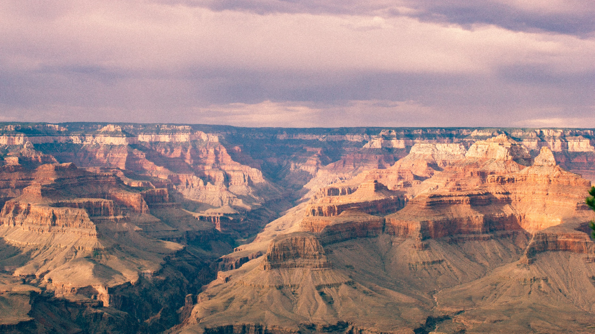

Grand Canyon National Park
Grand Canyon National Park, located in northwestern Arizona, is the 15th site in the United States to have been named as a national park. The park's central feature is the Grand Canyon, a gorge of the Colorado River, which is often considered one of the Wonders of the World. The park, which covers 1,217,262 acres of unincorporated area in Coconino and Mohave counties, recieved more than six million recreational visitors in 2017, which is the second highest count of all American national parks after Great Smoky Mountains National Park.

Zion National Park
Zion National Park is an American national park located in southwestern Utah near the town of Springdale. A prominent feature of the 229-square-mile park is Zion Canyon, which is 15 miles long and up to 2,640 ft deep. The canyon walls are reddish and tan-colored Navajo Sandstone eroded by the North Fork of the Virgin River. The lowest point in the park is 3,666 ft at Coalpits Wash and the highest peak is 8,726 ft at Horse Ranch Mountain. Located at the junction of the Colorado Plateau, Great Basin, and Mojave Desert regions, the park has a unique geography and a variety of life zones that allow for unusual plant and animal diversity.